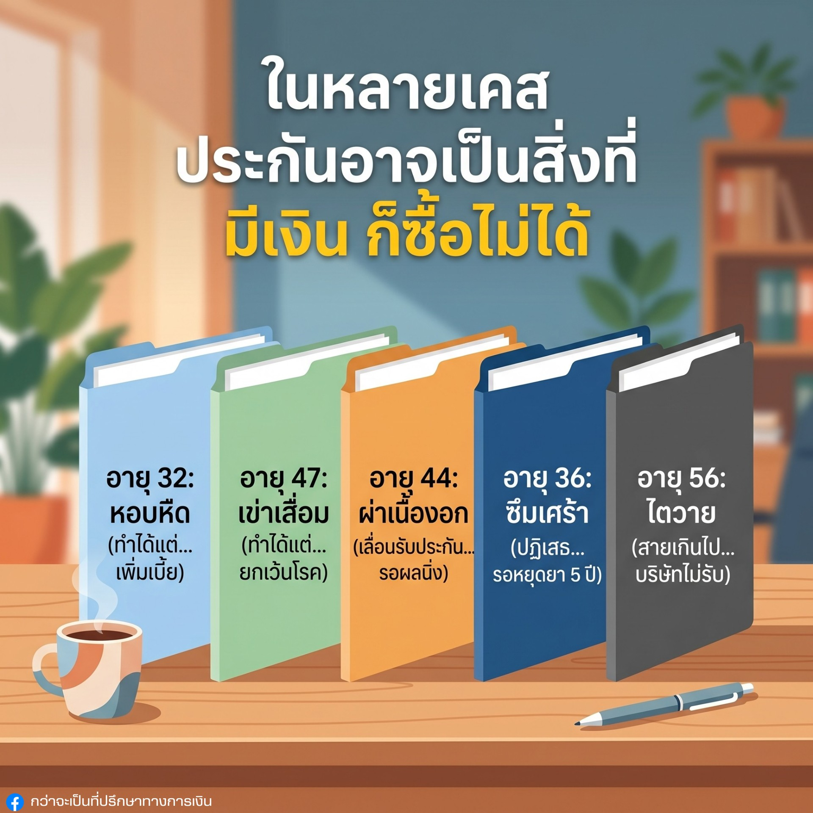

แข็งแรงดี อายุน้อย
ต้องมีประกันมั้ย?

คำถามนี้เจอบ่อยมากครับ วันนี้ขอข้ามทฤษฎีเงินเฟ้อหรือค่าหมอแพงที่รู้ๆ กันดีอยู่แล้วไปเลย ขอเล่าจากหน้างาน เคสของลูกค้าจริง เผื่อหลายคนจะได้ไม่พูดว่า "รู้งี้" ทีหลัง
📋 ทุกเคสขออนุญาตนำมาแชร์เป็นวิทยาทานแล้วครับ ลองดูเงื่อนไขที่เปลี่ยนไปเมื่อสุขภาพเราไม่เหมือนเดิม
5 เคสจริงจากหน้างาน
วัย 32 ปี · ประวัติหอบหืด + BMI เกิน
ทำได้ แต่ต้องจ่ายเบี้ยแพงกว่าคนปกติ ลูกค้ายังยอมจ่ายเพื่ออุดรอยรั่วความเสี่ยงโรคอื่น
วัย 47 ปี · ข้อเข่าเริ่มเสื่อม
ทำได้ แต่บริษัทระบุเงื่อนไขชัดเจนว่า จะไม่คุ้มครองการรักษาที่เกี่ยวกับข้อเข่าทั้งหมด
วัย 44 ปี · เพิ่งผ่าเนื้องอก
ถูกเลื่อนรับประกัน ต้องรอให้ผลตรวจนิ่งอย่างน้อย 6 เดือน ถึงจะยื่นพิจารณาใหม่ได้ ประกันคือเรื่องของวันนี้จริงๆ
วัย 36 ปี · มีประวัติซึมเศร้าและยังทานยา
ถูกปฏิเสธประกันสุขภาพทุกกรณี จะกลับมายื่นทำสุขภาพได้อีกครั้งก็ต่อเมื่อหยุดยาหรือหยุดการรักษาไปแล้วถึง 5 ปีเต็ม
วัย 56 ปี · ไตวายเรื้อรัง
สายเกินไปครับ บริษัทไม่สามารถรับความเสี่ยงได้เลย
ความจริงที่โหดร้าย
ตอนเราสุขภาพดี ประกันคือรายจ่ายที่ดูไม่ค่อยจำเป็น แต่พอร่างกายเริ่มส่งสัญญาณเตือน ประกันจะกลายเป็นสิ่งสำคัญที่ต่อให้มีเงินพร้อมจ่าย ก็อาจจะซื้อไม่ได้ หรือซื้อได้ก็ไม่คุ้มครองโรคที่เรากำลังปวดหัวกับมันอยู่ดี
⚠️ เรากะเกณฑ์ไม่ได้เลยว่าโรคร้ายจะมาเคาะประตูบ้านวันไหน โรคบางอย่างเช่นหลอดเลือดสมอง ตับแข็ง หรือมะเร็ง โผล่มาเมื่อไหร่คือตัดสิทธิ์การทำประกันแทบจะถาวร
ลองชั่งน้ำหนักกันดูครับ
ระหว่าง จ่ายค่าเบี้ยที่เรายังพอวางแผนควบคุมได้ กับ การแบกรับค่ารักษาที่บานปลายไปได้เรื่อยๆ — ตัวเลือกไหนที่คุณควบคุมได้มากกว่ากัน?
ยังแข็งแรงอยู่ใช่ไหม? นั่นแหละคือเวลาที่ดีที่สุด
ปรึกษาฟรี 15 นาที เช็คความคุ้มครองที่เหมาะกับอายุและสุขภาพของคุณตอนนี้
นัดปรึกษาฟรี →บทความที่เกี่ยวข้อง
บทความและโซลูชันที่เกี่ยวข้อง